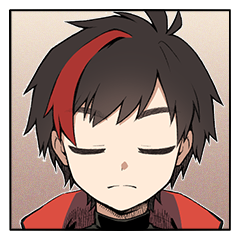
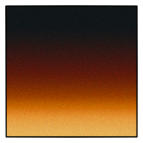
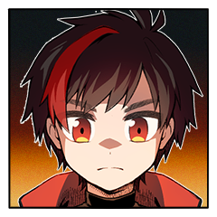

殺戮教本 ４日目
荒鹿火唯史
傷に障らないようにそっと。けれどしっかりと。
荒鹿火唯史
「一緒に訓練して、飯食って、遊んで……」
荒鹿火唯史
「覚えてるだろ？ 初めて一緒に街に連れてかれた時のこととかさ……」
荒鹿火唯史
「でも、その時も今も、感じたことが偽物ってことはないだろ」
霧渡匣
「唯史がそう思ってくれてるのは、嬉しいよ」
霧渡匣
「匣を開けてしまったら、ハコはなくなるの……」
荒鹿火唯史
「ここにいるお前が偽物だから、作り物だからって消えるのは、消すのは」
霧渡匣
「本当なら、こうして話している時間だって惜しくて、危ないくらいで」
霧渡匣
「唯史はハコを殺すか、ハコに殺されるしか、なくて」
荒鹿火唯史
「里を出れば、もうお前にそうしろって命令するやつもいないだろ」
霧渡匣
「いくら唯史がちょっと強くなっていたからって」
霧渡匣
「今のまま、ハコを連れて出ていけるはずない……」
荒鹿火唯史
「……もう一つ、奥の手があるって言ったらどうする？」
荒鹿火唯史
秘密：禍魂の欠片
生命を操作する力を持つこの秘宝は2つの役割を持っている。
ひとつは、力を吸収する受け皿。
もうひとつは、この秘宝を持って育った者を、里が行う実験に都合の良い存在に育て上げる矯正装置だ。
この秘宝が存在する限り、この秘宝の所有者は術者が設定した【背景】を１つ強制される。
このプライズが破壊された時、PC1は全ての弱点を失い、感情を結んでいた場合、感情表を振ってその内容を再決定する。
その後、奥義を一種特例習得する。

荒鹿火唯史
「……本当は、だから俺に任せて休んでろ！ って言いたいんだけどな」
荒鹿火唯史
「でも、いくらなんでもそこまで調子には乗れねーわな」
荒鹿火唯史
「……俺は見込みが甘い。すぐ調子に乗る」
霧渡匣
「それで満足して、唯史のこと、見逃すかもしれない……」
荒鹿火唯史
「……それは、珍しくお前の見込みが甘いんじゃないのか？」
霧渡匣
「唯史のこと、悪く思ってないかも、だし……」
荒鹿火唯史
「いなくなって、消えて、二度と会えなくなるなら」
荒鹿火唯史
「それじゃあ里を抜けようと思った意味がない」
霧渡匣
「それで死んじゃうかもしれないのは、やだ……」
荒鹿火唯史
「俺がハコを守るから、ハコが俺を守ってくれ」
荒鹿火唯史
「使えば、お前も新しい術が使えるようになるはずだ」
荒鹿火唯史
唯史がこっそりと持ち出した秘伝書。そこには里の秘術も記されている。
荒鹿火唯史
「あれだけ人がいるんだ。どこかに紛れて暮らす道があるはずだ」
荒鹿火唯史
「噂だけど……抜け忍の隠れ里ってのもあるらしい」
霧渡匣
2D6>=5 （判定：呪術） (2D6>=5) ＞ 8[2,6] ＞ 8 ＞ 成功
荒鹿火唯史
「いや……ここでそしたらどうしよう……とか言えるかよ！」
霧渡匣
＊秘伝書の効果により奥義を習得し、この場で即座に使用します。
霧渡匣
■奥義
《霧鬢風鬟》
指定特技 ：呪術
エフェクト：不死身/定め/回数制限
[ 霧渡 匣 ] 器術 : 0 → 1
[ 霧渡 匣 ] 体術 : 0 → 1
[ 霧渡 匣 ] 忍術 : 0 → 1
[ 霧渡 匣 ] 戦術 : 0 → 1
霧渡匣
黒く艶やかな黒絃が焼け爛れた患部へと集まり、撚り合わされて、
霧渡匣
頬を落ちる涙は未だ止められぬままの、ただのハコ。
霧渡匣
ゆっくりと身を起こして、唯史の肩へと頭を寄せる。
荒鹿火唯史
手を握るときとは違って、ためらいがちにその背中に腕を回す。
GM
それは別個のものでありながら、ただ側にある事を許し合う事。
GM
故にこそ、それは混ざり合う濁りとは違えども。
GM
覚悟を決める二人には、しかし襲い来る気配はなく。
GM
傷も癒え、移動をしようと思い立ったその時に、荒鹿火唯史が踏み出した足に、わずかに何かひっかかるような感触。
GM
同時、横の立ち木から針が射出され、飛びかかる。
GM
今まさに踏み出そうとしていた木立の中に、更には、今自分たちを取り巻く森の中に。
GM
たった今作動したのと同様の”仕掛け”が張り巡らされているのだと、気を巡らせれば察する事ができる。
中忍頭
罠によって作り上げられた籠の中に、黒装束が降り立つ。
荒鹿火唯史
「……こっちとしても、迷惑なストーカーをどうにかする機会があって助かるぜ」
荒鹿火唯史
「諦めて見送ってくれるなら見逃してやってもいいけど？」
霧渡匣
唯史の言葉に添うように、黙りこくって中忍頭を見ている。
中忍頭
数刻前、二人の前に姿を表したこの忍びは、まだ平静を装おうとするだけの余裕があった。
中忍頭
だが今、忍びの声はがらがらとひび割れ、懊悩と共に吐き出される吐息は獣のように荒い。
中忍頭
「あるはずが無いもの。はじめからなにものでも無いもの」
荒鹿火唯史
「里の思惑も、お前の妄執もどうでもいい」
中忍頭
「まさに里こそ、お前に何の執着も持ってはいなかったのだから」
中忍頭
「上手く行けば御の字、駄目でになればそれまで。使い捨ての玩具なぞそんなものだ」
中忍頭
「祈るように、願うように、決めていたのだ」
中忍頭
「お前はこの手で殺すとなァ！！！！！！！！！」
荒鹿火唯史
2D6>=5 （判定：分身の術） (2D6>=5) ＞ 3[1,2] ＞ 3 ＞ 失敗
中忍頭
2D6>=5 （判定：分身の術） (2D6>=5) ＞ 10[5,5] ＞ 10 ＞ 成功
[ 荒鹿火唯史 ] がダイスシンボルを公開。出目は 4 です。
[ 霧渡匣 ] がダイスシンボルを公開。出目は 4 です。
[ GM ] がダイスシンボルを公開。出目は 2 です。
[ GM ] がダイスシンボルを公開。出目は 4 です。
霧渡匣
2D6>=5 （判定：火術） (2D6>=5) ＞ 3[1,2] ＞ 3 ＞ 失敗
霧渡匣
＊同時攻撃なので逆凪の適用は後、黒絃の判定します。
霧渡匣
2D6>=5 （判定：第六感） (2D6>=5) ＞ 4[1,3] ＞ 4 ＞ 失敗
霧渡匣
が、その糸のひとつひとつが、張り巡らされた針に妨げられる。
中忍頭
「あってはならない筈の光景が眼前に広がる様というのは、どこまでも苛立たせる……」
荒鹿火唯史
中忍頭は唯史の間合いの外に陣取っている。
中忍頭
「それは、至極、良い。むしろ当然の摂理と言える」
中忍頭
「だが、だとしたらば……理不尽に！無慈悲に！あるべきなのにっ……！」
中忍頭
「どうして！あってはならない！許されるはずが無い！」
中忍頭
「貴様などに！”どこにもない存在”に、語りかけてなんになる！」
中忍頭
「私は、私はァ！ただ、あの方に今一度……！」
中忍頭
「……耐え難いっ耐え難いっ耐え難いィィ！！！」
中忍頭
半ば発狂したような叫びが木立を駆け巡り、仕掛けを次々に作動させる。
中忍頭
■奥義
《殺戮教本》
指定特技 ：言霊術
エフェクト：範囲攻撃/乱れ/人数制限
効果・演出：
荒鹿火唯史
禍魂の欠片を破壊して奥義を習得し、この場で使用します。
荒鹿火唯史
■奥義
荒禍火双焔
指定特技 ：意気
エフェクト：範囲攻撃/滅び/人数制限
GM
狂えども全ての針が急所を狙う。そこにあるのは純然たる殺意。
GM
里長が示唆した、忍びに必要な素質はまさにこのこと。
躊躇いなく研ぎ澄まされた、命を奪う技術。
荒鹿火唯史
腐っても中忍頭。その攻撃は唯史とハコの技量を凌駕する。
荒鹿火唯史
忍び同士の戦いにおいては、刹那の判断が生死を分ける。
荒鹿火唯史
出し惜しみをしていられる曲面ではない。
荒鹿火唯史
躊躇なく自身の中の秘宝を狙い──火をつける。
荒鹿火唯史
魂に打ち込まれた楔を、焔が焼き尽くす。

荒鹿火唯史
それらを燃やし尽くして、灰にして、
荒鹿火唯史
異物を焼いた焔は更に熱を上げ、溢れて、唯史を包む。
GM
そして則ち、その熱を抑えていた”匣”が消失してこそ、表に出るものである。

荒鹿火唯史
「どこにもない存在なんかじゃない！」
GM
楔を打ち込まれ、抑え込まれていた様々な情理、情動。
荒鹿火唯史
言葉とともに、より一層に焔が膨れ上がる。
GM
里によって、無い方が都合が良いとされていたそれらの名は
荒鹿火唯史
焔が振りかぶられ、迫る殺意を荒々しく迎え撃つ。
中忍頭
「……同感だな。これから死ぬ者には不要だろうさ！」
中忍頭
2D6>=5 （判定：分身の術） (2D6>=5) ＞ 6[1,5] ＞ 6 ＞ 成功
荒鹿火唯史
2D6>=5 （判定：分身の術） (2D6>=5) ＞ 5[1,4] ＞ 5 ＞ 成功
[ 霧渡匣 ] がダイスシンボルを公開。出目は 4 です。
[ 中忍頭 ] がダイスシンボルを公開。出目は 3 です。
[ 中忍頭 ] がダイスシンボルを公開。出目は 5 です。
[ 荒鹿火唯史 ] がダイスシンボルを公開。出目は 5 です。
[ 荒鹿火唯史 ] がダイスシンボルを公開。出目は 2 です。
GM
影分身どっちから決めるか 1d100で低い方から！
[ 中忍頭 ] 生命力 : 12 → 10
荒鹿火唯史
2D6+1>=8 （判定：意気） (2D6+1>=8) ＞ 4[1,3]+1 ＞ 5 ＞ 失敗
[ 荒鹿火唯史 ] 忍具 : 3 → 2
荒鹿火唯史
2D6+1>=8 （判定：意気） (2D6+1>=8) ＞ 7[3,4]+1 ＞ 8 ＞ 成功
[ 中忍頭 ] 忍具 : 2 → 1
荒鹿火唯史
2D6+1>=8 （判定：意気） (2D6+1>=8) ＞ 6[2,4]+1 ＞ 7 ＞ 失敗
荒鹿火唯史
2D6+1>=8 （判定：意気） (2D6+1>=8) ＞ 6[3,3]+1 ＞ 7 ＞ 失敗
[ 霧渡 匣 ] 忍具 : 2 → 1
霧渡匣
2D6>=8 （判定：記憶術） (2D6>=8) ＞ 7[1,6] ＞ 7 ＞ 失敗
霧渡匣
2D6>=8 （判定：記憶術） (2D6>=8) ＞ 9[3,6] ＞ 9 ＞ 成功
[ 荒鹿火唯史 ] 忍具 : 2 → 1
中忍頭
鈍色に輝く針の他、黒色に塗られた針も交じり、死角を交え音を超えるそれを回避するのは限りなく困難だろう。
霧渡匣
針に糸の流れを妨げられたならば、逆に糸で針の動きを妨げることも叶う。
霧渡匣
数限りなく張り巡らされたそれを、ハコが一人で捌くのは困難だった。
中忍頭
「ああああ゛あ゛あ゛あ゛ッッッッッ！！！！」
荒鹿火唯史
俺がハコを守るから、ハコは俺を守ってくれと言ったとおりに。
中忍頭
振り絞るような絶叫も、明け方の暗がりに虚しく響くのみ。
霧渡匣
2D6>=5 （判定：火術） (2D6>=5) ＞ 10[4,6] ＞ 10 ＞ 成功
霧渡匣
2D6>=5 （判定：第六感） (2D6>=5) ＞ 7[3,4] ＞ 7 ＞ 成功
中忍頭
2D6>=7 （判定：分身の術） 回避 (2D6>=7) ＞ 7[1,6] ＞ 7 ＞ 成功
中忍頭
磨き上げた技術に裏打ちされた精確な動作で糸を打ち払う。
荒鹿火唯史
奥義を中忍頭に使用。意気/範囲攻撃/滅び/人数制限
中忍頭
2D6>=5 （判定：意気） (2D6>=5) ＞ 9[4,5] ＞ 9 ＞ 成功
荒鹿火唯史
ハコの攻撃を捌いているのを隙と見て、焔を向ける。
荒鹿火唯史
舌打ちして、再び仕掛けるべく機を伺う。